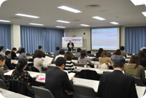

埼玉県生協役職員研修委託事業
今、あらためて地域福祉を考える
～地域福祉の現状と行政の動向や生協の果たす役割～研修会報告
- 【日時】
- 11月10日(木)10:30～12:30
- 【場所】
- 埼玉会館3C会議室
- 【参加者】
- 38人(さいたまコープ、ドゥコープ、生活クラブ、住宅生協、高齢協、埼玉県民共済生協、埼玉県生協連）
■概要
講師：尾崎 靖宏氏(日本生協連組織推進本部福祉事業推進部)
1．地域社会の現状
少子高齢はさらに進行し、2035年の高齢化率は30％を超え、生まれてくる子どもの数は200万人から110万人に減少、世帯構成は単独世帯が一番多くなります。また、地域のつながりも希薄化し孤立化が深まっています。
2．生協の取り組み
生協の特色を活かした総合的なサポート力の発揮、地域ネットワーク強化による地域福祉づくり、組合員・地域住民が主人公となった場づくり、生協としての社会的役割の発揮が求められています。
3．先進生協に学ぶ地域福祉活動推進のポイント
理念が共有されトップの強いリーダーシップが存在すること、自主的で多彩な活動を生み出す組織的な仕組みがしっかり位置づけてあること、組合員のニーズを事業化し、継続的に提供できる仕組みづくりをめざしていること、他団体や行政とのネットワークを大切にしていることがポイントです。
4．生協が果たすべき役割
事業を通じて組合員・地域住民のくらしをしっかり支えていくこと、積極的にネットワーク形成に関わること、地域の実情に合わせ学ぶ場を設定すること、日常的な相談窓口機能を設置し対応すること、国や行政に対し、制度化等の働きかけを行うこと、そのためには｢人づくり｣と｢計画づくり｣が大変重要です。
終わりに
生協が地域社会のなかでさらに役割を発揮していくためには、現在、各地域で、各生協で取り組まれている点での活動を、相互の学びあいや実践交流を通じてさらに展開させ、地域の中で面の広がりにしていくことが求められています。
～参加者の感想～
- 他生協での具体的な事例も多く、大変参考になりました。
- 生協と行政や他団体との関係性や連携などについてさらに知りたいと思いました。
- 出来ることを何か一つでも始めたいと思いました。